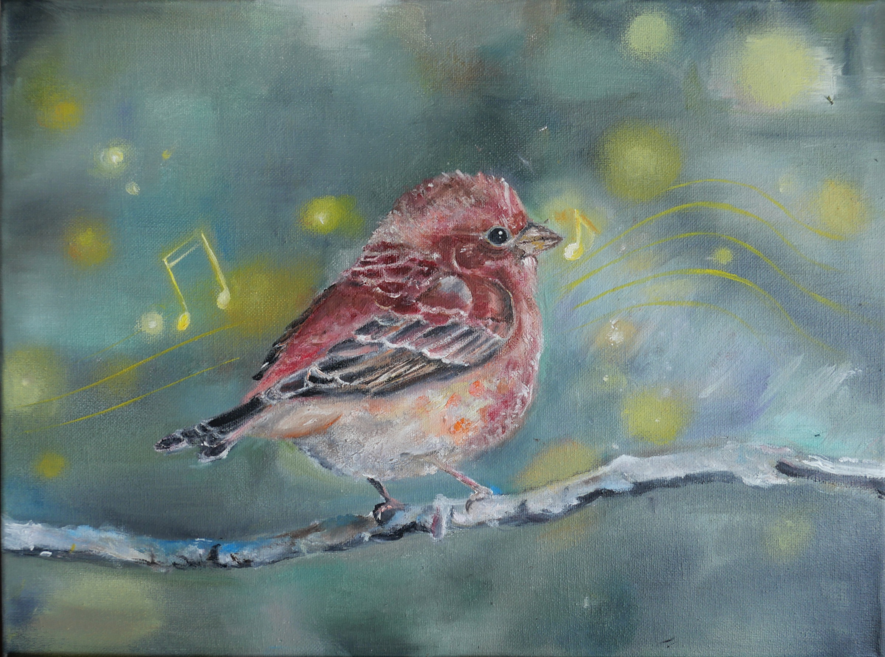
Purple Finch · oil
★ 1st Place · Washington State
Artist · Flutist · Founder
An artist and flutist on a mission to protect the environment through creativity — capturing the beauty of wildlife and nature, and inspiring others to help protect it.
View the workI'm an artist and flutist with a mission to protect the environment through creativity and education. I founded an art club where I teach members how to transform recyclable materials into meaningful works of art while promoting environmental awareness and sustainability.
My interest in art began at a young age, when I spent a lot of time practicing and exploring different techniques on my own. Later, I kept developing my skills through art lessons with Teacher Anan. My mom introduced me to the flute and has encouraged me every step of the way throughout my musical journey.
Wildlife and nature are the themes I care about most. I hope my work does more than look beautiful — I want people to see the beauty of nature and wildlife, and to recognize why it matters so much to protect and care for our environment.
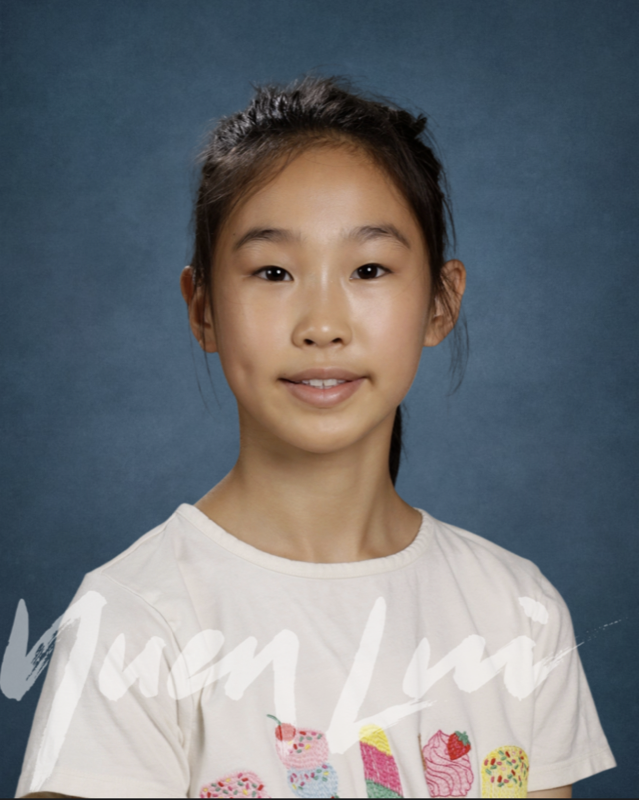
Finished works celebrating wildlife and the natural world.
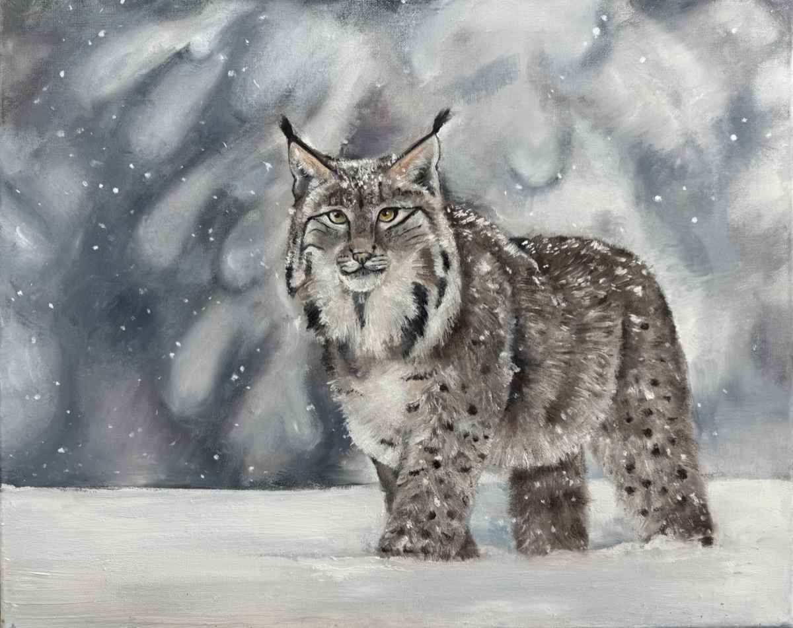
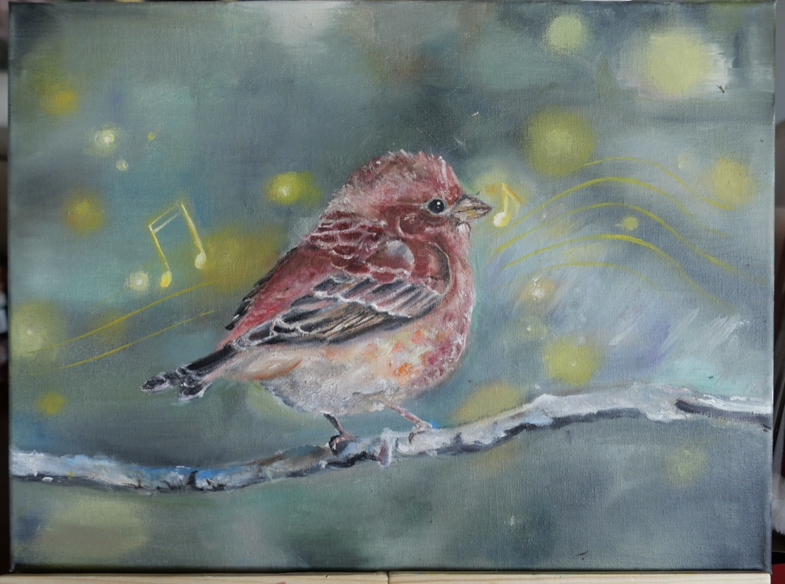
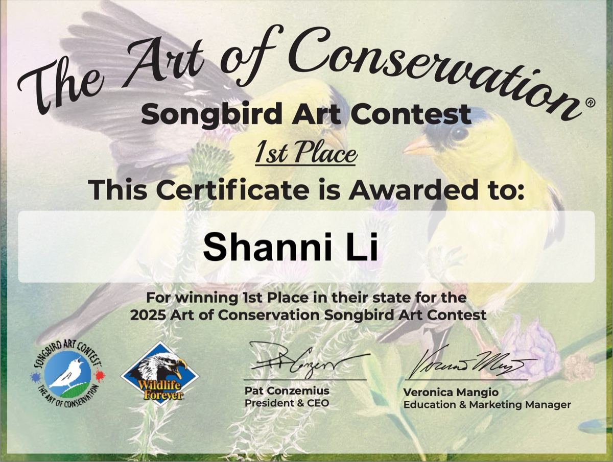
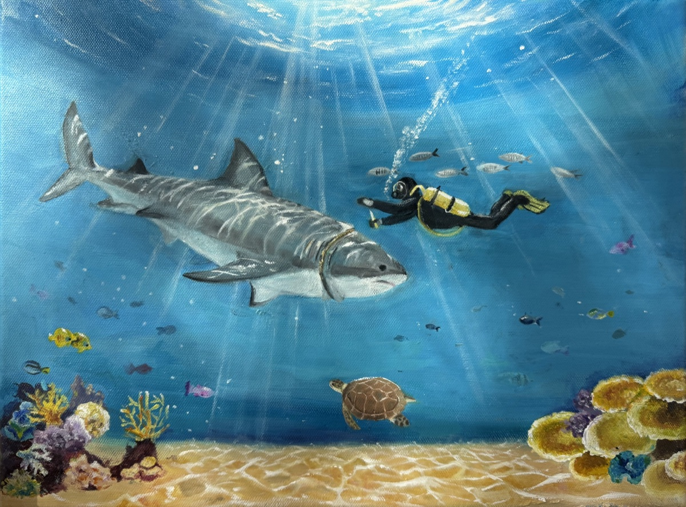
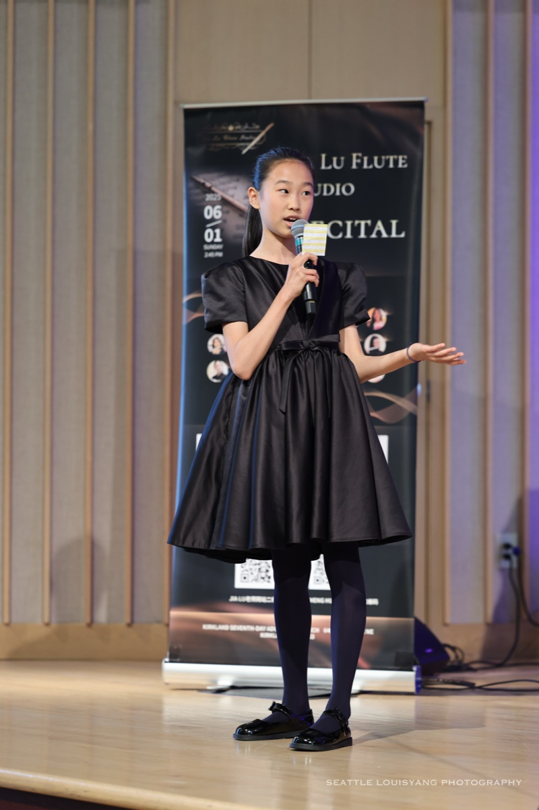
My mom introduced me to the flute and has encouraged me every step of the way throughout my musical journey. It's become one of the ways I express the same care and patience I bring to my art.
I'm currently a member of the Bellevue Youth Symphony's Flute Choir, where I enjoy performing with other flutists and continuing to grow as a musician.
Performing in the Bellevue Youth Symphony's Flute Choir means playing as part of an ensemble — listening closely, blending tone, and shaping a phrase together with other flutists.
It's a space to keep growing as a musician alongside people who love the same music I do.
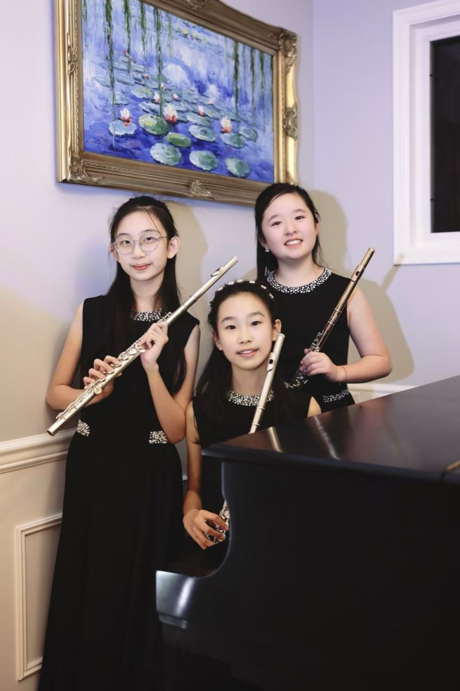
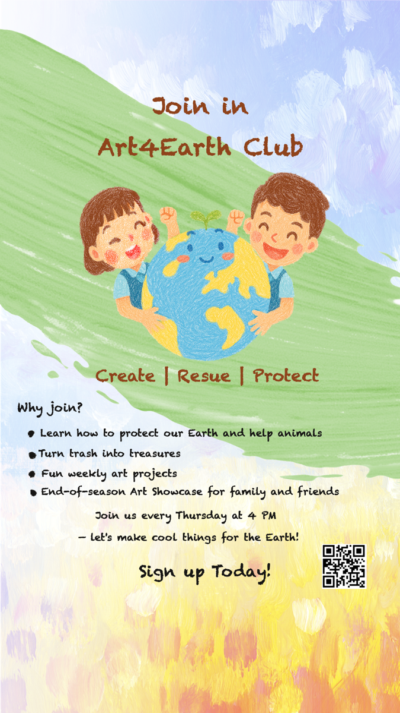
"I founded Art4Earth because I believe creativity can inspire people to care for our planet. Through art, I hope to encourage others to recycle, appreciate nature, and take responsibility for protecting the environment."
Founded in Fall 2025, my art club uses art and crafts to teach members about recycling, protecting the environment, and creative ways to bring nature into their work.
For example, during one of our meetings we transformed recycled cardboard boxes into miniature rooms — showing how everyday materials can become imaginative works of art instead of being thrown away.
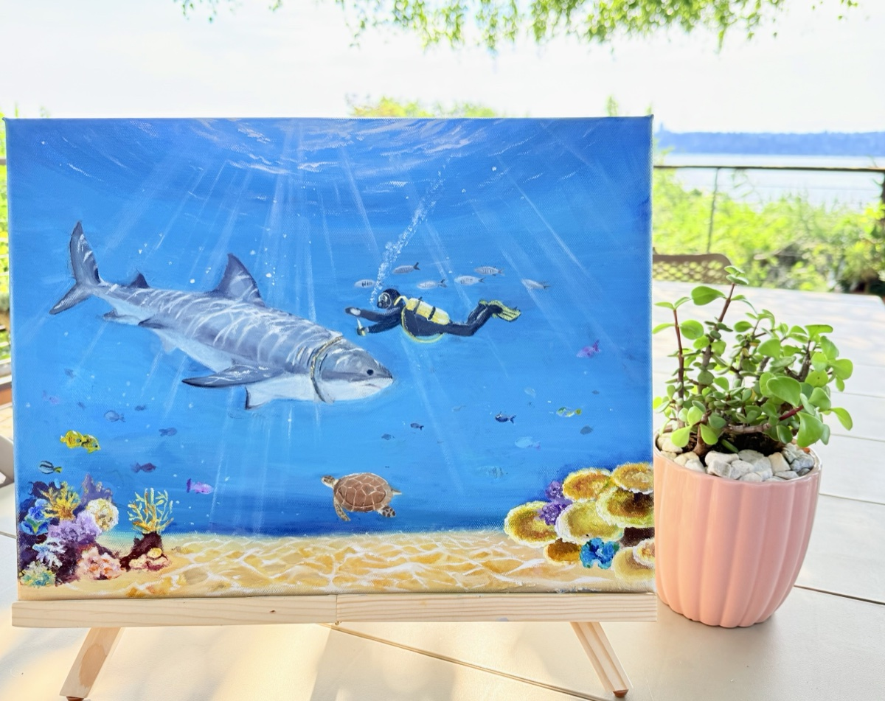
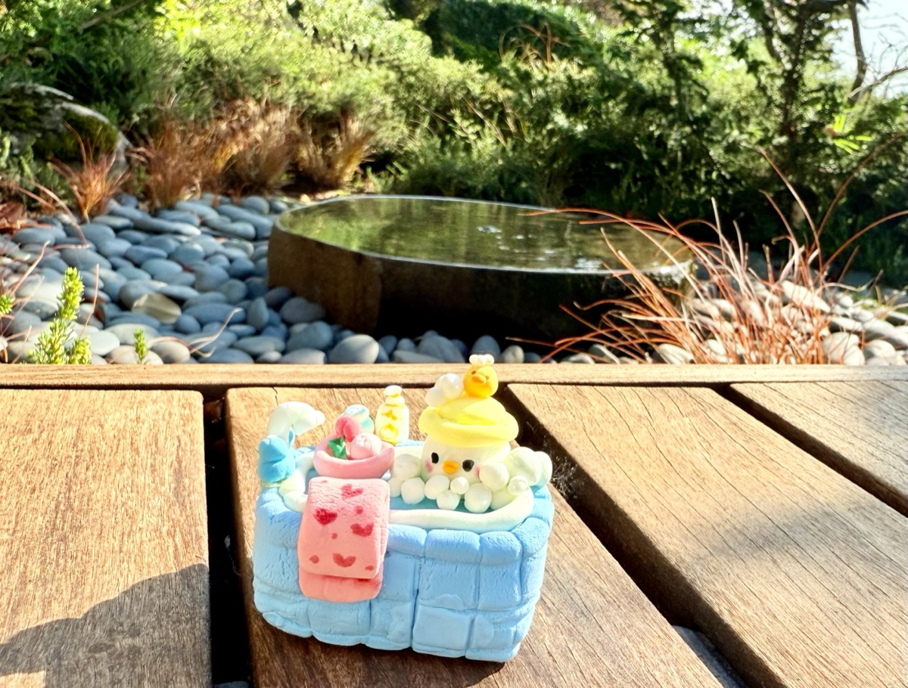
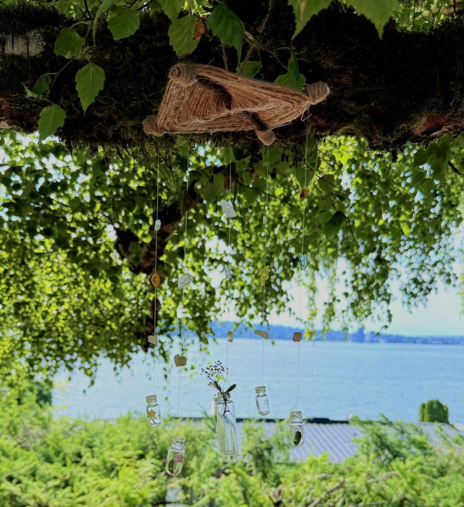
Have a question about Shanni's art, music, or the Art4Earth Club? Send a note below and it will reach the family directly.